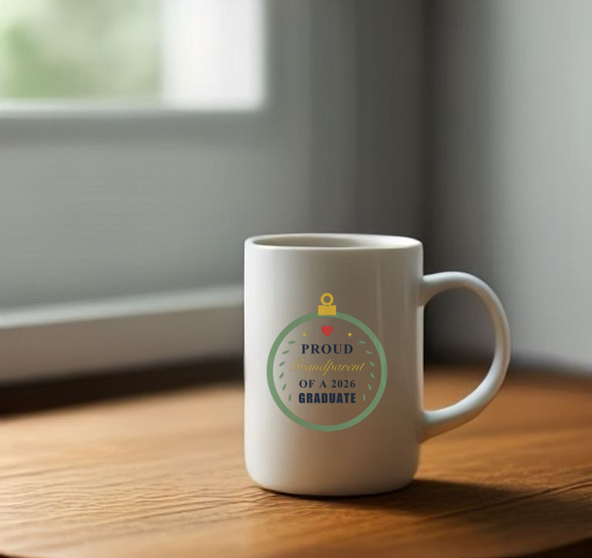
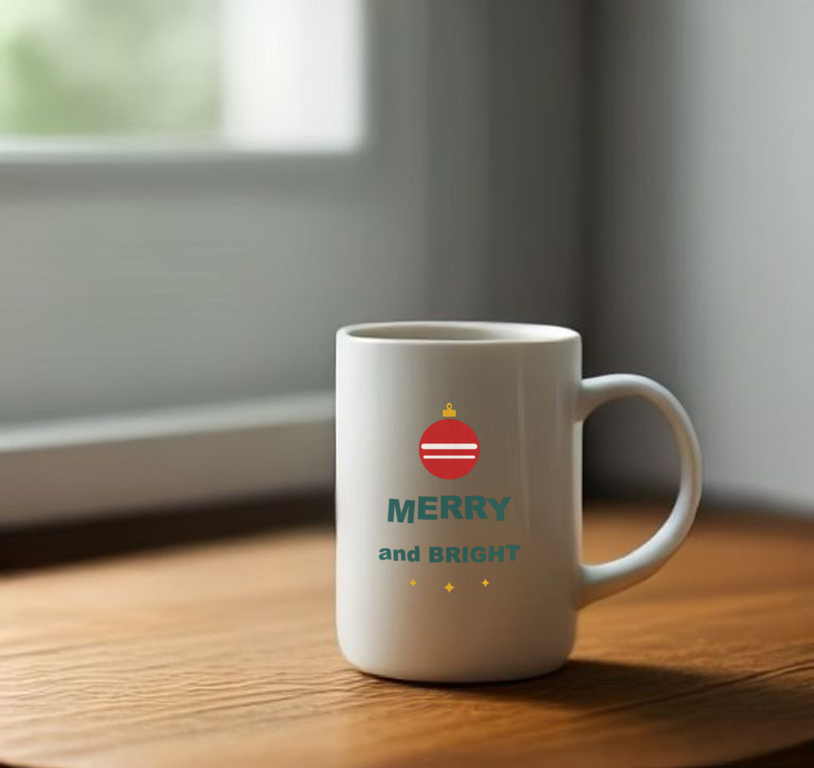
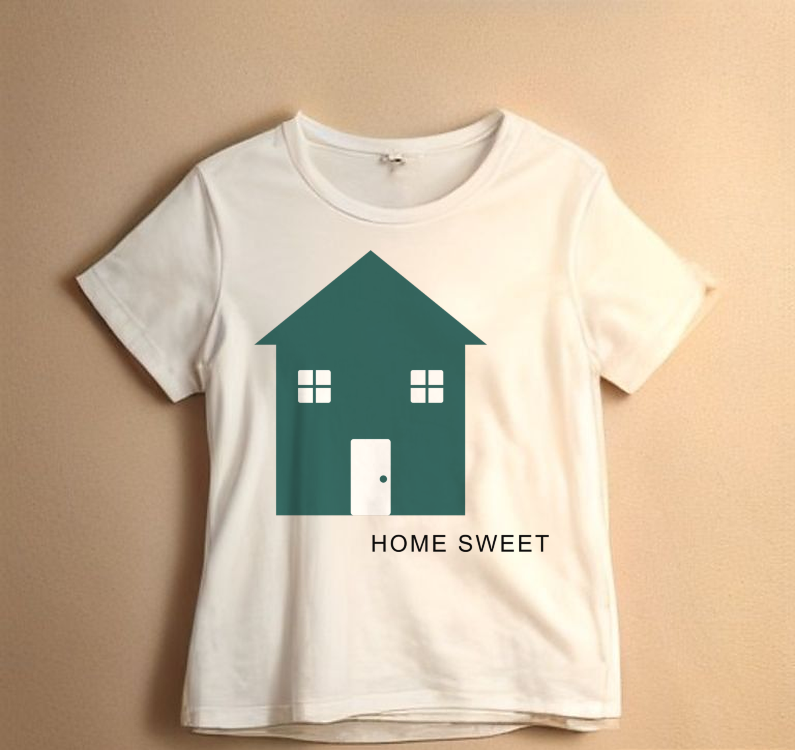

Cricut & Silhouette Project Guides (25 Tutorials)
Real cut settings, vinyl & blank comparisons, troubleshooting tables, and commercial selling playbooks.

The Zero-Weed Graduation Keepsake (Gingham Cap)
2026 Cricut project tutorial & cut settings: The Zero-Weed Graduation Keepsake (Gingham Cap)
Read Full Guide →
Stop Selling Generic 'Class of 2026' Mugs. Sell These Instead.
2026 Cricut project tutorial & cut settings: Stop Selling Generic 'Class of 2026' Mugs. Sell These Instead.
Read Full Guide →
How to Make the Scalloped Welcome Sign Everyone is Pinning
2026 Cricut project tutorial & cut settings: How to Make the Scalloped Welcome Sign Everyone is Pinning
Read Full Guide →
The 'Strawberry Sweet' Baby Shower Trend is Taking Over 2026
2026 Cricut project tutorial & cut settings: The 'Strawberry Sweet' Baby Shower Trend is Taking Over 2026
Read Full Guide →
The 2026 Graduation Keepsake Every Grandparent is Buying
2026 Cricut project tutorial & cut settings: The 2026 Graduation Keepsake Every Grandparent is Buying
Read Full Guide →
Best Cricut Machine for Beginners (2026 Buying Guide)
Compare the Cricut Joy Xtra, Explore 3, and Maker 3 before you buy: which fits your crafts, what to skip, and the exact
Read Full Guide →
Best Vinyl for Cricut: Adhesive vs Iron-On (and Exactly What to Buy First)
Cricut vinyl guide: adhesive vs iron-on compared, removable vs permanent rules, Design Space settings cheat sheet, and f
Read Full Guide →
9 Cricut Beginner Mistakes That Waste Vinyl (And How to Fix Them)
Nine mistakes that wreck beginner Cricut projects, from no test cut to the wrong transfer tape, plus the fixes that stop
Read Full Guide →
Cricut Christmas Ornaments That Sell (Start in September)
Make personalized Christmas ornaments with Cricut SVG files: wood, acrylic, glass, HTV. Real costs, times, and Etsy list
Read Full Guide →
10 Cricut Halloween Crafts You Can Actually Finish Before October 31
Real prices, times, and Cricut settings for 10 Halloween crafts: porch signs, treat bags, shirts, door decor. Start with
Read Full Guide →
Cricut Keychains That Don't Fall Apart: 8 Projects That Actually Sell
Make Cricut keychains that survive pockets and keys. Acrylic, leather, wood and shrink plastic compared, plus 8 project
Read Full Guide →
Cricut Maker 5 Projects: What 3mm of Thickness Actually Unlocks
Cricut Maker 5 projects that only work now: 3mm leather, balsa, bookboard, and engraving, plus what still runs on an Exp
Read Full Guide →
Cricut Material Guide: What to Cut, What to Skip, and What It Costs
Which Cricut materials are worth buying: vinyl, HTV, cardstock, leather, wood, acrylic, with blades, settings and rough
Read Full Guide →Cricut Mug Projects That Actually Last
Realistic Cricut mug tips: permanent vinyl rules, dishwasher truth, care cards, layering, tumbler tricks, project costs,
Read Full Guide →
Cricut Porch Signs: Make a Welcome Sign That Survives Rain, Sun, and Winter
Make Cricut porch signs that survive rain, sun and winter. Substrate comparison, sealing, sizing and cut settings, plus
Read Full Guide →
Cricut Shirt Projects: Make Your First HTV Tee Without Ruining It
Make Cricut shirt projects that actually last. HTV blanks, iron vs heat press temps, washing rules, and 8 t-shirt ideas
Read Full Guide →
Cricut SVG Bundles: Why They Beat Buying Files One at a Time
SVG bundles cut per-file cost versus buying singles. See the math, spot quality files, dodge licensing traps, and size a
Read Full Guide →
15 Personalized Cricut Teacher Gifts Under $5 (Batch Method)
Fifteen Cricut teacher gifts under $5, from totes to hidden-message mugs. Batch-cut every name in one Design Space sessi
Read Full Guide →Cricut Thanksgiving Table Decor You Can Still Finish by November 26
Thanksgiving table decor you can still finish: place cards, wine-glass charms, table runners, and a Give Thanks sign — r
Read Full Guide →
Cricut Tumbler Projects: 8 Cup & Mug Ideas That Actually Survive the Dishwasher
Struggling with peeling tumbler decals? Step-by-step Cricut tumbler project guide: permanent vinyl, seam alignment, glit
Read Full Guide →
Cricut vs Silhouette: The Honest Comparison Before You Buy
Honest Cricut vs Silhouette comparison: software, subscriptions, mats, print-then-cut, and price, so you buy the machine
Read Full Guide →
Cricut Wall Decals: The Maker's Guide to Stick-On Wall Art That Won't Ruin Your Walls
Learn how to cut and apply Cricut wall decals without bubbles or ruined paint. Removable vs permanent vinyl, the wet met
Read Full Guide →500 Free Cricut SVGs: Download the Full Free SVG Pack and Stop Paying Per File
Download 500 free Cricut SVGs — teacher, mom, Halloween, Christmas, quotes, monograms. Instant download, free personal u
Read Full Guide →
How to Use Cricut Design Space: A Complete Beginner Walkthrough
Learn Cricut Design Space step by step: setup, test cuts, calibration, Attach vs Weld, your first vinyl decal, and the 5
Read Full Guide →Selling Cricut Crafts on Etsy: An Honest Starter Guide
A practical guide to selling Cricut crafts on Etsy: pick a lane, avoid trademark takedowns, price shirts so you profit,
Read Full Guide →